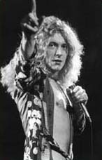
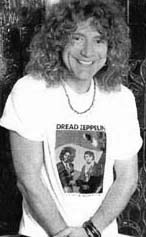
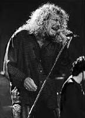

|
Jim Morrison |
Robert Plant |
John Lennon |
|---|
Robert Plant

Роберт Энтони Плант (Robert Anthony Plant) родился 20 августа 1948 года. Он вырос в местечке, расположенном на западе от Бирмингема (Birmingham), где городские постройки Вест Мидланда (West Midlands) сливаются с сельскими районами Уорчестершир (Worcestershire) и Шропшир (Shropshire). В то время он жил в районе Киддерминстера (Kidderminster). Юный Роберт учился в средней классической школе имени короля Эдуарда VI в Сторбридже (Stourbridge). В этом же городе, будучи подростком, он впервые вышел на сцену в Клубе Семи Звезд Блюза (Seven Stars Blues Club).
После участия в нескольких местных группах, одна из которых называлась Crawling King Snakes, Роберт Плант присоединился к бирмингемской команде Band Of Joy. Группа претерпела некоторые изменения состава, из которых лучшим приобретением был барабанщик Джон Бонам (John Bonham). Плант выпустил несколько синглов, на одном из которых он пел с группой под названием Listen, а на другом работал с ветераном британского блюза Алексисом Корнером (Alexis Korner), но, несмотря на то, что он подверг серьезному испытанию свою карьеру, выступив в качестве отдельного исполнителя, он никогда более так не поступал.
Важные изменения в его жизни произошли летом 1968 года, когда распалась группа Yardbirds. В составе этой лондонской группы были известные, в масштабах Великобритании, гитаристы: Эрик Клэптон (Eric Clapton), Джефф Бек (Jeff Beck) и Джимми Пейдж (Jimmy Page). Менеджер Yardbirds Питер Грант (Peter Grant) предпринял попытку собрать новую команду, используя в качестве ядра Пейджа и басиста Криса Дрежа (Chris Dreja). Но вскоре Крис решил покинуть группу, сменив бас-гитару на фотоаппарат. Пейдж в то время был известным сессионным музыкантом и вскоре нашел первого "клиента" - Джона Пола Джонса (John Paul Johnes) - среди своих многочисленных знакомых сессионных музыкантов. Джонс был опытным музыкантом и аранжировщиком, при этом сразу для двух инструментов - бас-гитары и клавишных. А Грант и Пейдж продолжали искать вокалиста и барабанщика.
Первым вокалистом, с которым начались переговоры, был Терри Рейд (Terry Reid). В этот момент Рейд был связан контрактом и поэтому предложил как альтернативу Роберта Планта. Пейдж и Грант отправились посмотреть выступление Планта в бирмингемский колледж подготовки учителей, где он выступал с группой под названием Hobbstweedle. Группа произвела хорошее впечатление, а Роберт, в свою очередь, понравился Джимми Пейджу. Когда Планту предложили стать вокалистом в новой группе, он согласился и вдобавок уговорил присоединиться к группе Джона Бонама. Так как у Yardbirds были запланированы гастроли по Скандинавии, четверка выступила там, но под названием The New Yardbirds.
После возвращения из Скандинавии было выбрано новое название - Led Zeppelin. Идея названия группы "движущейся как свинцовый дирижабль" пришла от Кейта Муна (Keith Moon) и Джона Энтуайстла (John Entwistle), которые собирались в то время покинуть группу The Who. Несмотря на то, что название фактически принадлежало Муну и Энтуайстлу, Плант, Пейдж, Джонс и Бонам взяли это название и сделали своим собственным - столь могучее имя подходило для группы и для ее музыки. Их первое выступление под названием Led Zeppelin состоялось 25 октября 1968 года.
Роберт Плант встретился со своей будущей женой Маурин (Maureen) в 1966 году, а 9 ноября 1968 года они поженились. Вскоре он стал отцом двоих детей: дочери Кармен (Carmen) и сына Карака (Karac).
Первый альбом группы назывался просто Led Zeppelin. Альбом, как всем известно, записанный всего за 30 часов в студии Olympic на западе Лондона, стал мощной смесью хард-рока (Communication Breakdown и Good Times Bad Times) и эмоционального блюза (включая две песни Уилли Диксон (Willie Dixon)). Другая блюзовая запись Dazed And Confused (написанная на основе старой песни Yardbirds), стала на долгие годы гвоздем выступлений Led Zeppelin на концертах. Выпуск пластинки осуществлялся под бдительным контролем Джимми Пейджа, имевшего большой опыт работы с продюсерами, таким как Микки Мост (Mickie Most). Альбом получил смешанную реакцию от критиков, но любителям рока он понравился.
Питер Грант, сплав гения, безжалостности и эксцентричности, нацелился на продвижение альбома на рынок США. Он подготовил выгодный для Led Zeppelin контракт с Atlantic Record, дающий ему полный контроль над выпуском тиража, а так же и группой. Директор Atlantic Ахмет Эртеган (Ahmet Ertegun) и Джерри Векслер (Jerry Wexler), полностью прочувствовавшие гениальность группы и специфический стиль ведения дел Гранта, подписали 5-летний контракт. Led Zeppelin начал свои первые американские гастроли в конце декабря 1968 года, что позволило преумножить будущие продажи альбома, поступившего в продажу в январе 1969 года.
До и после американского тура, группа занимала скромное место в Великобритании, и их выступления не влияли на их успех, чего нельзя было сказать об их взрыве популярности в США. Второе турне в США, летом 1969 года, прошло еще более успешно, чем первое. Перед ним группа выступила в Лондоне, в Albert Hall, наконец нанеся главный удар по своей родной стране. Их второй альбом готовился, когда группа находилась "на колесах", в различных студиях. Несколько раз в течение 1969 года группе удалось сделать записи на BBC, а так же сняться на датском телевидении.
Альбом Led Zeppelin II поступил в продажу в октябре 1969 года. Этот еще один многогранный альбом, где Плант появился как ведущий автор текстов, в таких песнях как Ramble On и Thank You. Вдохновение Плант черпал из разных источников, от традиционных блюзовых песен до книг Дж. Р. Р. Толкиена (J.R.R.Tolkien). Альбом содержал супер-хит Whole Lotta Love, первый широко известный "гимн" Led Zeppelin. Отредактированная версия этой песни поднялась до 4 места в чартах США.
Led Zeppelin никогда не появлялся в BBS' Top Of The Pops, потому что Питер Грант препятствовал телевизионным выступлениям и выпуску синглов. С одной стороны это объяснялось культивированием мистического ореола вокруг группы, с другой - то, что синглы направлены на неинтересную для Led Zeppelin часть аудитории. Синглы выпускались в США для радиостанций и никогда официально не выпускались в Великобритании.
В начале 1970 года группа принялась за работу над следующим альбомом, Led Zeppelin III. Пейдж и Плант решили готовить альбом в Bron-Yr-Aur, коттедже недалеко от Сноудонии (Snowdonia), где Плант бывал в детстве. Репетиции и записи проходили в Хидли Грэндж (Headley Grange), старом особняке в Хемпшире (Hampshire). Выпущенная в октябре пластинка показала большую разноплановость группы, что не понравилось некоторым критикам. В ней не было ожидаемых агрессивных вещей, за исключением Immigrant Song, записи были мелодичными и акустическими, включая традиционную народную песню Gallows Pole и медленные номера Tangerine и Since I've Been Loving You.
У Led Zeppelin росла репутация концертных исполнителей, они заполняли огромные арены не только в США. В 1971 году они вернулись в Великобританию и устроили несколько выступлений в клубах, а затем отправились в турне по Европе. В апреле они записали несколько "живых" выступлений на BBC.
Кроме репутации концертных исполнителей, они заработали славу крушителей номеров мотелей и гонщиков на мотоциклах по коридорам отелей. Этот миф возник больше от выходок сопровождающей команды, возглавляемой роуд-менеджером Ричардом Коулом (Richard Cole), чем от поведения самих Led Zeppelin. Иногда эта легенда проявлялась и на их выступлениях, например в Милане, когда во время концерта начались беспорядки.
Следующий альбом группы, и, возможно, самый знаменитый, вышел в ноябре 1971 года. Обложка альбома не содержит ни названия пластинки, ни названия группы. Идентифицировать ее можно было только по четырем руническим символам на внутреннем развороте. При этом настоящих рунических символов только два, но это уже совсем другая история. Atlantic сопротивлялась выходу альбома без "опознавательных знаков", но это была очередная гениальная маркетинговая уловка Питера Гранта. Альбом Zoso, как иногда его называют, создал еще более мистическую атмосферу вокруг Led Zeppelin, что, естественно, повлекло большие объемы продаж альбома. Эта пластинка также была сделана в Хидли Грэндж.
Самая известная вещь (не только в этом альбоме, но и среди всех песен Led Zeppelin) стала и остается до сих пор Stairway To Heaven. Согласно легенде, Роберт Плант написал слова сразу, как только услышал мелодию, и половина слов из этой импровизации попала в финальную версию. Альбом включал в себя как хард-роковые (Black Dog, Rock And Roll, When The Levee Breaks), так и "мягкие" песни (The Battle Of Evermore, с характерным вокалом Сэнди Денни (Sandy Denny) и Going To California, одну из самых любимых песен Планта).
Следующий альбом, Houses Of The Holy, не появлялся до весны 1973 года. Постоянно занимаясь записями, группа выпустила слишком много треков, чтобы они поместились на один альбом. Странно, но заглавная песня альбома, одноименная Houses Of The Holy, так и не вошла в окончательную редакцию альбома. (А мне кажется, что это очередной трюк великого Гранта - Houses Of The Holy вышла на следующем альбоме, и, естественно, все фанаты должны были ринуться за ним, даже в случае неудачной пластинки - И.К.). Необходимо отметить две примечательные песни этого альбома - No Quarter и The Rain Song - медленные, но могучие, в которых чувствуется и слышен талант Джона Пола Джонса.
В конце 1972 года Led Zeppelin совершили турне в Японии и Великобритании. Они вернулись в США в 1973, продав билеты на 24-х дневное турне за 4 часа. Группа перемещалась по Штатам в специально нанятом Боинге под названием Starship. В городе Тампа (Флорида) они побили рекорды Beatles как по посещаемости концерта, так и продаже записей. В конце гастролей в июле, выступление в Madison Square Garden было отснято на кинопленку Джо Массотом (Joe Massot). Позже эти кадры вошли в фильм о группе. Несмотря на значительный успех, 1973 год для Планта сложился плохо из-за того, что у него возникли проблемы с голосовыми связками.
Группа организовала собственную фирму под названием Swan Song в мае 1974 года. Несмотря на то, что это был механизм для выпуска всех последующих альбомов Led Zeppelin, фирма занималась выпуском альбомов и других известных исполнителей. Первым (и первым успешным) выпуском новой фирмы стал отличный дебютный альбом группы Bad Company. Лого фирмы можно показаться как портрет Роберта Планта с крыльями, на самом деле это картина Уильяма Риммера (William Rimmer) "Вечер, закат дня".
Карьера Led Zeppelin достигла своего пика 24 февраля 1975 года, когда был выпущен величайший альбом Physical Graffiti. Это двойной альбом, точнее сказать, двойной шедевр. Он содержал не только два мощных рок-гимна (Trampled Underfoot для "танцев" и Kashmir для "отдыха"), но и другие замечательные песни Houses Of The Holy, In The Light, Ten Years Gone, The Rover, The Wanton Song, Custard Pie и другие. Продажи альбома были феноменальные, возродился интерес к предыдущим альбомам группы, да так, что все они одновременно оказались в чартах Billboard.
Выпуск Physical Graffiti совпал с очередным большим турне, которое включало в себя встречу с Элвисом Пресли (Elvis Presley). В мае Led Zeppelin отыграли 5 концертов в переполненном зале Earl's Court в Лондоне. Но триумф был омрачен трагедией. 4 августа 1975 года Роберт Плант и его жена попали в серьезную автокатастрофу на греческом острове Родос. Маурин перенесла сложную операцию и провела несколько недель в больнице. Роберт сломал себе лодыжку и руку так, что еще в течение двух лет не мог полностью опираться на сломанную ногу.
Все, что ни делалось после Physical Graffiti, успех группы уменьшался. Следующий студийный альбом стал Presence, выпущенный в марте 1976 года. Несмотря на то, что в нем были некоторые удачные вещи, например Achilles' Last Stand, Led Zeppelin стал превращаться в одного из многих рок-динозавров, которые пробудили панк-революцию. Роберт Плант записывал свои вокальные партии, сидя в инвалидном кресле-каталке. Вынужденное отсутствие группы на сцене порождало упорные слухи о ее распаде и преждевременном выходе на пенсию.
Ближе к концу 1976 года Swan Song выпустила фильм о группе The Song Remains The Same и двойной концертный альбом. В дополнение к пленкам, снятым в 1973 году, в фильм были включены фантастические новеллы, якобы происходившие с участниками группы (часть о Роберте Планте была посвящена истории о короле Артуре и его мече, коне и храме Раглан (Raglan Castle)) и некоторые сценические клипы, которых было очень мало. Так как фильм был неубедительным, его лучше было не выпускать, если только ни несколько визуальных рядов с группой. Позже этот фильм перевели на видео, дав возможность фанам быстро перематывать неинтересные куски.
В фильме можно увидеть не только Роберта Планта, но и его жену и детей. Трагедия случилась и с его сыном, Караком. Он скоропостижно скончался от вирусной инфекции в июле 1977 года, когда группа была в середине своих последних американских гастролей. Плант вылетел из Нового Орлеана домой и на следующий год практически выбыл из группы, что опять вызвало к жизни слухи о распаде Led Zeppelin. Группа не появлялась почти весь 1978 год и ее выход на сцену в 1979 году стал почти неожиданным.
В августе Led Zeppelin дали два концерта на Кнебуортском (Knebworth) фестивале (Англия) при большом стечении публики. Хотя были и слышны некоторые критические замечания, группа доказала, что она способна собирать на свои выступления огромные толпы фанов. Их долгожданный альбом, записанный на студии группы Abba в Швеции, также вышел в августе. In Through The Out Door сразу попал в верхние строки чартов и в Америке и в Англии. В этом альбоме, главным идеологом которого стал Джон Пол Джонс, заметно, что группа стала мягче, хотя и записала пару жестких вещей (Fool In The Rain и Carouselambra).
Летом 1980 Zeppelin снова интенсивно гастролировал по Европе, и казалось, что он достиг своей лучшей формы. Турне закончилось в Берлине 7 июля. Led Zeppelin имел на будущее множество планов, включая большое американское турне. Все их намерения внезапно оборвались в связи со скоропостижной смертью Джона Бонама, который был найден 25 сентября мертвым после пьяного разгула в доме Джимми Пейджа. Пейдж, Плант и Джонс был абсолютно опустошены и Led Zeppelin практически распался, хотя формально не расформировывал до декабря.
На этом заканчивается та часть жизни Роберта Планта, которая привела его на вершину рок-славы. Но, как мы увидим дальше, последующие годы жизни не свергли его со столь высокого пьедестала. Несмотря на развал Led Zeppelin, жизнь его продолжалась…
Весной 1981 года, Роберт Плант начал выступать с ритм-н-блюзовой группой, известной под названием Honeydrippers, в которой играл его друг Робби Блант (Robbie Blunt). Вскоре Плант и Блант начали сотрудничать и в написании песен, а позже пригласили бас-гитариста Пола Мартинеса (Paul Martinez) и клавишника Джеза Вудрофа (Jezz Woodroffe). Чтобы иметь полный состав музыкантов для записи, они пригласили в качестве "гостей" барабанщиков Фила Коллинза (Phil Collins) и Кози Пауэлла (Cozy Powell). Хотя Фил Коллинз оставался некоторое время и в составе группы.
Роберт Плант решил выпустить свой первый сольный альбом самостоятельно. Его запись состоялась в студии Rockfield Studios в городе Монмуте (Monmouth). Альбом Pictures At Eleven был выпущен 25 июня 1982 года, и быстро забрался на вершину чартов. Лучшей записью альбома можно считать песню с обнадеживающим названием Like I've Never Been Gone, достойной Led Zeppelin.
Хотя голос был тем же и звук был хорошим, к сожалению, некоторые из песен, записанные Робертом Плантом, недотягивали до прежнего класса Планта. Как и при записи, Плант первоначально выступал и в качестве менеджера, хотя Питер Грант помог ему договориться с Atlantic Records - с Филом Карсоном (Phil Carson) и Биллом Кебишли (Bill Curbishley).
Как постскриптум к эре Led Zeppelin, в ноябре 1982 под соответствующим названием Coda вышла коллекция записей, ранее не выходивших на других альбомах. На альбоме Coda было несколько интересных записей, но наибольший интерес он представлял главным образом для настоящих фанатов Led Zeppelin. Стали распадаться и другие связи Zeppelin: Питер Грант ушел от оставшихся участников группы, фирма Swan Song пребывала в состоянии ступора, Роберт Плант расстался со своей женой Маурин, а позже развелся.
В начале 1983 Роберт Плант записал свой второй сольный альбома, The Principle of Moments. Фил Коллинз опять присоединился к постоянным членам группы в студии Rockfield Studios. После выпуска альбома последовали североамериканские гастроли. Песня Big Log, выпущенная на сингле, попала в двадцатку лучших в чартах как США, так и Великобритании. С этой песней Плант выступил в передаче Top Of The Pops. Он также появился на телевидении BBC в передаче Pop Quiz.
В 1984 Плант встречается с Джимми Пейджем в группе, к которой примкнули Джеф Бек (Jeff Beck) и Найл Роджерс (Nile Rodgers). Плант снова дал новому образованию название Honeydrippers, записывая EP с пятью треками под названием Volume One. Эта пластинка хорошо продавалась в США, но все стали ожидать Volume Two! Песни, включенные в этот EP, являлись кавер-версиями песен других исполнителей. Одна из них, Sea Of Love, стала известным хитом после того, как была выпущена на сингле.
В 1985 Плант попытался экспериментировать на своем третьем альбоме Shaken'n'Stirred, но получилось это не совсем успешно, ни в музыкальном смысле, ни в коммерческом. Лучшая вещь, Little By Little, была также выпущена на сингле. Хотя 1985 турне (теперь с Ричи Хейвордом (Ritchie Hayward) в качестве барабанщика) прошло достаточно успешно, группа развалилась в октябре из-за разногласий между Плантом и Блантом.
Музыкальным событием 1985 года стал концерт Live Aid, прошедший в июле. Плант, Джимми Пейдж и Джон Пол Джонс воссоединились на сцене Филадельфии, с Полом Мартинесом на бас-гитаре, Филом Коллинзом и Тони Томпсоном (Tony Thompson) на барабанах. В начале 1986 Плант, Пейдж, Джонс и Тони Томпсон сделали попытку возрождения Led Zeppelin, но Томпсон пострадал в автомобильной катастрофе и все застопорилось.
В 1986 и 1987 годах Плант потратил много сил для того, чтобы собрать новую группу. Наконец подобрался следующий состав: гитарист Дуг Бойл (Doug Boyle), барабанщик Крис Блэкуэлл (Chris Blackwell) и клавишник Фил Джонстон (Phil Johnstone). Последний являлся также одним из основных авторов песен и сопродюсерм. Позже к ним присоединился басист Чарли Джонс, затем Фил Скрэгг (Phil Scragg). Чарли Джонс, помимо группы, установил еще одну связь с Плантом, женившись на его дочери Кармен.
Первым альбомом с этим составом стал Now and Zen, записанный в конце 1987 года и выпущенный в феврале 1988. Он заработал достойный успех, частично из-за песни Tall Cool One, по произношению похожей на Coca Cola. Джимми Пейдж сыграл на гитаре в двух песнях. Обложка альбома несет волчий мотив, который похож на знак любимой футбольной команды Планта Wolverhampton Wanderers.
До этого момента Плант твердо стоял на том, чтобы не исполнять старые песни Led Zeppelin. Наконец он смягчался и начал включать некоторые номера, например Trampled Underfoot, на своих выступлениях. В мае 1988 года он сделал еще один шаг: Led Zeppelin вновь воссоединился для концерта, состоявшегося на 40-летней годовщине Atlantic Records. В качестве барабанщика был сын Джона Бонама Джейсон. Роберт Плант выступил на этом концерте, переданном по телевидению, и как сольный певец.
Плант и его новая группа не очень много работали в студии. Студия Olympic Studios, в которой раньше записывался Led Zeppelin, Плант использовал, чтобы подготовить следующий альбом, выпущенный в марте 1990 года. Название Manic Nirvana взято от прозвища, которое дал Роберту Планту Билл Кебишли. Хотя Manic Nirvana не был его самым успешным альбомом Планта, турне, которое последовавшее за альбомом, был хорошо встречено критиками и публикой. В июне 1990 Плант получил награду Silver Clef и выступил на фестивале лауреатов в Кнебуорте (Knebworth), где Джимми Пейдж присоединился на сцене к группе, чтобы исполнить несколько песен Led Zeppelin.
В конце 1990 года была выпущена пластинка Led Zeppelin под названием Box Set. Волна ностальгии поднялась еще выше после передачи MTV Rockumentary, посвященной Led Zeppelin. Но у Планта получился длительный промежуток до выхода следующего нового альбома. Подготовка и запись неторопливо шла в течение 1991 и 1992 годов. В это же время не было больших гастролей. В апреле 1992 Плант выступил вместе с остатками Queen на концерте, посвященном памяти Фредди Меркюри (Freddie Mercury).

Альбом Fate Of Nations наконец был выпущен в июне 1993 года. На этом альбоме играет не только постоянная группа Планта, но и множество приглашенных музыкантов, таких как Мэйри Браннан (Maire Brennan), Найджел Кеннеди (Nigel Kennedy) и Ричард Томпсон (Richard Thompson). Гитарист Кевин Скотт МакМичел Guitarist (Kevin Scott MacMichael) также внес существенную лепту в альбом. Fate Of Nations вобрал в себя разнообразие стилей и влияний, некоторые из которых идут от Led Zeppelin. Две песни с альбома были выпущенные на синглах (29 Palms и If I Were A Carpenter), затем состоялось мировое турне, закончившееся в Южной Америке в начале 1994 года.
В те годы ходило множество слухов о воссоединении Пейджа и Планта. Они вместе выступали на нескольких "специальных случаях": Live Aid в 1985, концерте, посвященном годовщине Atlantic Records в 1988, и на фестивале в Кнебуорте в 1990. Роберт Плант был один из трех вокалистов на альбоме Джимми Пейджа Outrider, а Пейдж, в свою очередь, принимал участие в альбоме Планта Now And Zen. Но это были лишь короткие встречи, ничем долгосрочным не продолжавшиеся и их карьеры имели собственные пути. Джимми Пейдж участвовал вместе с Полом Роджерсом (Paul Rodgers) в группе The Firm и занимался ремастерингом всех студийных записей Led Zeppelin.
В 1994 MTV предложили Планту и Пейджу выступить в шоу, посвященном Led Zeppelin, в серии Unplugged. Неизвестно, был ли Джон Пол Джонс не приглашен или его это не заинтересовало, но Пейдж и Плант начали свое сотрудничество. Результаты можно услышать на альбоме No Quarter, который был выпущен и на видео. Выступление на MTV состоялось 12 октября. Нормальный состав рок-группы был расширен мандолиной и народным инструментом харди-гарди (hurdy-gurdy) (с виду скрипка, клавиши как на баяне, сзади рукоятка для нагнетания воздуха, держится как гитара - И.К.), египетским ансамблем из шестнадцати человек и струнным оркестром. Выступление включило классические песни Zeppelin, такие как Kashmir и The Battle Of Evermore, и четыре новые песни, которые сильно тяготели к марроканской музыке. Кстати, три из них и были записаны именно в Марокко.
В январе 1995 Led Zeppelin был введен в Rock 'n' Roll Hall Of Fame, и три оставшихся в живых члена группы в очередной раз выступили вместе. С февраля 1995 года, в течение года, Пейдж и Плант были в более или менее непрерывном турне по США, Европе, снова США, Японии и Австралии. Во время турне они добавляли в свои выступления больше и больше песен Zeppelin. В том же 1995 году Atlantic Records выпустила трибьют-альбом Encomium, в котором записались известные артисты, например Шерил Кроу (Sheryl Crow) и Duran Duran. На этом же альбоме Роберт Плант и Тори Амос (Tori Amos) исполняют версию песни Down By The Seaside.
В сентябре 1997 вышел первый и единственный в Великобритании сингл Led Zeppelin, включающий в себя Whole Lotta Love и две записи, Travelling Riverside Blues и Hey Hey What Can I Do, ранее доступные только на сборнике Boxed Set. В ноябре вышел "новый" альбом Led Zeppelin, вобравший в себя "живые" и студийные записи, сделанные на BBC в 1969 и 1971 годах.
В 1998 Пейдж и Плант опять начали действовать. В феврале началось турне по Восточной Европе, где они представляли как классику Led Zeppelin, так и некоторые новые песни. Звук был классическим Zeppelin'овским, при участии Чарли Джонса (Charlie Jones) на бас-гитаре и Майкла Ли (Michael Lee) на барабанах. Новый сингл Most High был выпущен в конце марта, вместе с концертами в Лондоне и Париже и множеством съемок на телевидении. Затем в апреле вышел новый альбом, Walking Into Clarksdale, встреченный критиками "на ура". Пейдж и Плант разделили сложности продюсирования альбома со Стивом Албини (Steve Albini).
В мае 1998 года Пейдж и Плант были полностью заняты в большом Североамериканском турне. Они продолжали свои поездки в течение почти целого года с небольшими перерывами, мотаясь между Европой и Америкой. Их выступления были хорошо встречены везде, где только они не побывали. После отказа использовать репутацию Zeppelin в 1980-ых, Плант занял более мягкую позицию в 1990-ых, делая попытки использования новых стилей, но помня о своих музыкальных корнях.
Фактически Роберт Плант никогда не отрывался от своих корней, живя на ферме около Киддерминстера (Kidderminster) в течение многих лет. Его тексты песен навеяны его давним интересом к кельтским легендам, и в музыке он все так же близок к своим детским кумирам блюза. Но самая большая его ценность - его голос! Роберт Плант не только певец. Он использует свой голос как музыкальный инструмент. При этом он владеет им так, что ни один синтезатор не сможет его воспроизвести. Дейв Льюис (Dave Lewis) говорит, что на записях из Хидли Грэндж вокал Планта звучит немного тише, чем следовало бы, но приглушенный вокал производит более сильное впечатление, замысловато переплетаясь с другими инструментами.

После развода Роберт Плант имел романтические связи с певицами Алланой Майлз (Alannah Myles) и Наймой Акхтар (Najma Akhtar), но так и не женился ни на одной из них. Главная любовь в его жизни - футбольная команда Wolverhampton Wanderers. Когда его спросили в 1998 году в телевизионном интервью, что он предпочитает - секс, наркотики или рок-н-ролл, он без колебаний ответил: "Футбол".
В середине 1999 года Плант плавно, в очередной раз, разошёлся с Джимми Пейджем и теперь выступает со своей группой "Priory Of Brion"
Воссоединение Роберта Планта с Джимми Пейджем в 1998 году явило свету не просто чистый Led Zeppelin, но и Zeppelin'овское стремление к новому и свежему. В феврале 1999 года Пейдж и Плант достигли таких высот, каких не мог достичь Led Zeppelin, когда получили премию Grammy за лучшее рок-выступление с Most High.
Койструбова Вероніка. 2016 рік